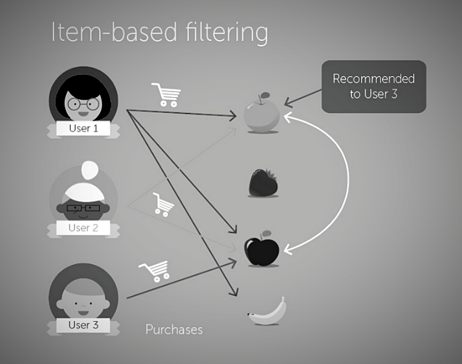

Due to enormous amount of data present in a web application or shopping carts, recommendations are used to engage users and helps in saving good amount of time to look for similar products which were interested by them. Moreover, Recommender systems helps in maximizing the profits of an organization by suggesting relevant items which might be purchased by the user.
Our project aims to build a recommender system for the given data set using user behavior learning. Collaborative filtering technique is one such method used to display recommendations using user input. Recommender systems play a major role in increasing user interaction with applications by recommending useful items to the user based on the previous history.
Data set has a major role to play in building recommender systems. Data set shouldn’t contain null or empty tuples. For this project we are using beer review data from social website (Beer Advocate). This data set has ratings for each beer in different aspects such as aroma, appearance, taste, palate & overall rating with 1,586,614 records.
For this recommender system we are using Matrix factorization method with stochastic gradient. The model is used to estimate matrix which approximates to rating matrix (input to the model).
R is the rating matrix (This matrix is formed when the user inputs the preferences).
P is a latent feature matrix of the user and features (aroma, taste, appearance, palate, overall rating).
Q is latent feature matrix of Beers and features.
R` is built with matrix factorization.
Item -Item collaborative filtering is one such recommendation techniques used to recommend items similar to those which were rated by the user or interested by the user in the past. This method is similar to the user-user collaborative filtering technique where the similarity between items is measured and predictions were made to those items for a particular user and analyze whether he is interested .

• The above shows some probable scenarios for user input preferences. Then the overall weighted sum of rating is calculated using the below method: Overall weighted rating (for case1)= (2*(review_overall)+2*(review_taste)+1*(review_appearance)+1*(review_aroma)+2*(review_palate))/2+2+1+1+2
here {i= 1,2,3,....n} which is user's who rated both A and B
Here S is the similarity score of Item u with item N
R is the rating given by the user u for item N
N can be subset of items which have some similarity score with respect to item i
1. Item-Item recommendations: For user 'northyorksammy' with the weights 1 1 1 1 :
User-User Recommendations:
2. Item-Item recommendations: For user 'mikesgroove' with the weights 1 1 1 1 :
User-User Recommendations:
As seen in the above comparison results, The recommendations from these two models have no or very few matches. This mainly has to do with the way these models are designed and the factors that are taken into consideration to give recommendations.